kompute algorithm test - BC data
Coby Warkentin and Donghyung Lee
2021-10-29
Last updated: 2021-10-29
Checks: 7 0
Knit directory: komputeExamples/
This reproducible R Markdown analysis was created with workflowr (version 1.6.2). The Checks tab describes the reproducibility checks that were applied when the results were created. The Past versions tab lists the development history.
Great! Since the R Markdown file has been committed to the Git repository, you know the exact version of the code that produced these results.
Great job! The global environment was empty. Objects defined in the global environment can affect the analysis in your R Markdown file in unknown ways. For reproduciblity it’s best to always run the code in an empty environment.
The command set.seed(20211027) was run prior to running the code in the R Markdown file. Setting a seed ensures that any results that rely on randomness, e.g. subsampling or permutations, are reproducible.
Great job! Recording the operating system, R version, and package versions is critical for reproducibility.
Nice! There were no cached chunks for this analysis, so you can be confident that you successfully produced the results during this run.
Great job! Using relative paths to the files within your workflowr project makes it easier to run your code on other machines.
Great! You are using Git for version control. Tracking code development and connecting the code version to the results is critical for reproducibility.
The results in this page were generated with repository version 46485bd. See the Past versions tab to see a history of the changes made to the R Markdown and HTML files.
Note that you need to be careful to ensure that all relevant files for the analysis have been committed to Git prior to generating the results (you can use wflow_publish or wflow_git_commit). workflowr only checks the R Markdown file, but you know if there are other scripts or data files that it depends on. Below is the status of the Git repository when the results were generated:
Ignored files:
Ignored: .Rhistory
Ignored: .Rproj.user/
Unstaged changes:
Modified: README.md
Note that any generated files, e.g. HTML, png, CSS, etc., are not included in this status report because it is ok for generated content to have uncommitted changes.
These are the previous versions of the repository in which changes were made to the R Markdown (analysis/kompute_test_10212021_BC.Rmd) and HTML (docs/kompute_test_10212021_BC.html) files. If you’ve configured a remote Git repository (see ?wflow_git_remote), click on the hyperlinks in the table below to view the files as they were in that past version.
| File | Version | Author | Date | Message |
|---|---|---|---|---|
| Rmd | 46485bd | Coby Warkentin | 2021-10-29 | wflow_publish("analysis/kompute_test_10212021_BC.Rmd") |
| Rmd | b7ebb1f | GitHub | 2021-10-29 | Add files via upload |
Load packages
rm(list=ls())
library(data.table)
library(dplyr)
Attaching package: 'dplyr'The following objects are masked from 'package:data.table':
between, first, lastThe following objects are masked from 'package:stats':
filter, lagThe following objects are masked from 'package:base':
intersect, setdiff, setequal, union#library(kableExtra)
library(reshape2)
Attaching package: 'reshape2'The following objects are masked from 'package:data.table':
dcast, meltlibrary(ggplot2)
library(tidyr) #spread
Attaching package: 'tidyr'The following object is masked from 'package:reshape2':
smiths#library(pheatmap)
library(RColorBrewer)
#library(GGally) #ggpairs
library(irlba) # partial PCALoading required package: Matrix
Attaching package: 'Matrix'The following objects are masked from 'package:tidyr':
expand, pack, unpack#library(gridExtra)
#library(cowplot)
library(circlize)========================================
circlize version 0.4.13
CRAN page: https://cran.r-project.org/package=circlize
Github page: https://github.com/jokergoo/circlize
Documentation: https://jokergoo.github.io/circlize_book/book/
If you use it in published research, please cite:
Gu, Z. circlize implements and enhances circular visualization
in R. Bioinformatics 2014.
This message can be suppressed by:
suppressPackageStartupMessages(library(circlize))
========================================library(ComplexHeatmap)Loading required package: grid========================================
ComplexHeatmap version 2.10.0
Bioconductor page: http://bioconductor.org/packages/ComplexHeatmap/
Github page: https://github.com/jokergoo/ComplexHeatmap
Documentation: http://jokergoo.github.io/ComplexHeatmap-reference
If you use it in published research, please cite:
Gu, Z. Complex heatmaps reveal patterns and correlations in multidimensional
genomic data. Bioinformatics 2016.
The new InteractiveComplexHeatmap package can directly export static
complex heatmaps into an interactive Shiny app with zero effort. Have a try!
This message can be suppressed by:
suppressPackageStartupMessages(library(ComplexHeatmap))
========================================#options(max.print = 3000)Raw Control Phenotype
Read all control phenotype data
# load(file="~/Google Drive Miami/Miami_IMPC/data/v10.1/AllControls_small.Rdata")
load(file="G:/.shortcut-targets-by-id/1SeBOMb4GZ2Gkldxp4QNEnFWHOiAqtRTz/Miami_IMPC/data/v10.1/AllControls_small.Rdata")
dim(allpheno)[1] 12025349 15head(allpheno) biological_sample_id procedure_stable_id
1 242736 IMPC_ACS_003
2 155527 IMPC_GRS_001
3 72957 IMPC_OFD_001
4 183476 IMPC_GRS_001
5 81327 IMPC_OFD_001
6 226658 IMPC_ACS_003
procedure_name parameter_stable_id
1 Acoustic Startle and Pre-pulse Inhibition (PPI) IMPC_ACS_036_001
2 Grip Strength IMPC_GRS_008_001
3 Open Field IMPC_OFD_020_001
4 Grip Strength IMPC_GRS_009_001
5 Open Field IMPC_OFD_007_001
6 Acoustic Startle and Pre-pulse Inhibition (PPI) IMPC_ACS_034_001
parameter_name data_point sex
1 % Pre-pulse inhibition - PPI4 88.0373 female
2 Forelimb grip strength measurement mean 75.3333 female
3 Distance travelled - total 6130.3000 female
4 Forelimb and hindlimb grip strength measurement mean 120.3970 male
5 Whole arena resting time 607.0000 female
6 % Pre-pulse inhibition - PPI2 68.0742 female
age_in_weeks weight phenotyping_center date_of_experiment strain_name
1 9 18.15 JAX 2014-08-18T00:00:00Z C57BL/6NJ
2 9 20.00 BCM 2018-02-20T00:00:00Z C57BL/6N
3 9 21.20 RBRC 2015-08-03T00:00:00Z C57BL/6NTac
4 9 28.40 WTSI 2015-03-02T00:00:00Z C57BL/6N
5 9 22.62 KMPC 2018-01-30T00:00:00Z C57BL/6NTac
6 10 18.54 JAX 2015-12-16T00:00:00Z C57BL/6NJ
developmental_stage_name observation_type data_type
1 Early adult unidimensional FLOAT
2 Early adult unidimensional FLOAT
3 Early adult unidimensional FLOAT
4 Early adult unidimensional FLOAT
5 Early adult unidimensional FLOAT
6 Early adult unidimensional FLOATallpheno.org <- allpheno
#allpheno <- allpheno.orgCorrect procedure and phenotype names, filter out time series data
We use BC only.
allpheno = allpheno %>%
filter(procedure_name=="Body Composition (DEXA lean/fat)") %>%
mutate(proc_short_name=recode(procedure_name, "Body Composition (DEXA lean/fat)"="BC")) %>%
#mutate(parameter_name=recode(parameter_name, "Triglyceride"="Triglycerides")) %>%
mutate(proc_param_name=paste0(proc_short_name,"_",parameter_name)) %>%
mutate(proc_param_name_stable_id=paste0(proc_short_name,"_",parameter_name,"_",parameter_stable_id))
## Extract time series data and find out parameter names
ts <- allpheno %>% filter(observation_type=="time_series")
table(ts$proc_param_name)< table of extent 0 ># Filter out time series data
allpheno <- allpheno %>% filter(observation_type!="time_series")
table(allpheno$proc_param_name)
BC_BMC/Body weight
24446
BC_Body length
19233
BC_Body weight
25879
BC_Bone Area
24461
BC_Bone Mineral Content (excluding skull)
24918
BC_Bone Mineral Density (excluding skull)
24919
BC_Fat mass
25154
BC_Fat/Body weight
24682
BC_Lean mass
25156
BC_Lean/Body weight
24684 Heatmap showing measured phenotypes
This heatmaps show phenotypes measured for each control mouse. Columns represent mice and rows represent phenotypes.
mtest <- table(allpheno$proc_param_name_stable_id, allpheno$biological_sample_id)
mtest <-as.data.frame.matrix(mtest)
dim(mtest)[1] 51 25690if(FALSE){
nmax <-max(mtest)
library(circlize)
col_fun = colorRamp2(c(0, nmax), c("white", "red"))
col_fun(seq(0, nmax))
pdf("~/Google Drive Miami/Miami_IMPC/output/measured_phenotypes_controls_BC.pdf", width = 12, height = 14)
ht = Heatmap(as.matrix(mtest), cluster_rows = FALSE, cluster_columns = FALSE, show_column_names = F, col = col_fun,
row_names_gp = gpar(fontsize = 8), name="Count")
draw(ht)
dev.off()
}Remove phenotypes with num of obs < 15000
mtest <- table(allpheno$proc_param_name, allpheno$biological_sample_id)
dim(mtest)[1] 10 25690head(mtest[,1:10])
39638 39639 39640 39641 39642 39643
BC_BMC/Body weight 1 1 1 1 1 1
BC_Body length 0 0 0 1 0 1
BC_Body weight 2 1 1 1 1 1
BC_Bone Area 1 1 1 1 1 1
BC_Bone Mineral Content (excluding skull) 2 1 1 1 1 1
BC_Bone Mineral Density (excluding skull) 2 1 1 1 1 1
39650 39651 39652 39657
BC_BMC/Body weight 1 1 1 1
BC_Body length 1 0 0 1
BC_Body weight 1 1 1 1
BC_Bone Area 1 1 1 1
BC_Bone Mineral Content (excluding skull) 1 1 1 1
BC_Bone Mineral Density (excluding skull) 1 1 1 1mtest0 <- mtest>0
head(mtest0[,1:10])
39638 39639 39640 39641 39642 39643
BC_BMC/Body weight TRUE TRUE TRUE TRUE TRUE TRUE
BC_Body length FALSE FALSE FALSE TRUE FALSE TRUE
BC_Body weight TRUE TRUE TRUE TRUE TRUE TRUE
BC_Bone Area TRUE TRUE TRUE TRUE TRUE TRUE
BC_Bone Mineral Content (excluding skull) TRUE TRUE TRUE TRUE TRUE TRUE
BC_Bone Mineral Density (excluding skull) TRUE TRUE TRUE TRUE TRUE TRUE
39650 39651 39652 39657
BC_BMC/Body weight TRUE TRUE TRUE TRUE
BC_Body length TRUE FALSE FALSE TRUE
BC_Body weight TRUE TRUE TRUE TRUE
BC_Bone Area TRUE TRUE TRUE TRUE
BC_Bone Mineral Content (excluding skull) TRUE TRUE TRUE TRUE
BC_Bone Mineral Density (excluding skull) TRUE TRUE TRUE TRUErowSums(mtest0) BC_BMC/Body weight
24446
BC_Body length
19233
BC_Body weight
25675
BC_Bone Area
24461
BC_Bone Mineral Content (excluding skull)
24714
BC_Bone Mineral Density (excluding skull)
24715
BC_Fat mass
24950
BC_Fat/Body weight
24682
BC_Lean mass
24952
BC_Lean/Body weight
24684 rmv.pheno.list <- rownames(mtest)[rowSums(mtest0)<15000]
rmv.pheno.listcharacter(0)dim(allpheno)[1] 243532 18allpheno <- allpheno %>% filter(!(proc_param_name %in% rmv.pheno.list))
dim(allpheno)[1] 243532 18# number of phenotypes left
length(unique(allpheno$proc_param_name))[1] 10Romove samples with num of measured phenotypes < 10
mtest <- table(allpheno$proc_param_name, allpheno$biological_sample_id)
dim(mtest)[1] 10 25690head(mtest[,1:10])
39638 39639 39640 39641 39642 39643
BC_BMC/Body weight 1 1 1 1 1 1
BC_Body length 0 0 0 1 0 1
BC_Body weight 2 1 1 1 1 1
BC_Bone Area 1 1 1 1 1 1
BC_Bone Mineral Content (excluding skull) 2 1 1 1 1 1
BC_Bone Mineral Density (excluding skull) 2 1 1 1 1 1
39650 39651 39652 39657
BC_BMC/Body weight 1 1 1 1
BC_Body length 1 0 0 1
BC_Body weight 1 1 1 1
BC_Bone Area 1 1 1 1
BC_Bone Mineral Content (excluding skull) 1 1 1 1
BC_Bone Mineral Density (excluding skull) 1 1 1 1mtest0 <- mtest>0
head(mtest0[,1:10])
39638 39639 39640 39641 39642 39643
BC_BMC/Body weight TRUE TRUE TRUE TRUE TRUE TRUE
BC_Body length FALSE FALSE FALSE TRUE FALSE TRUE
BC_Body weight TRUE TRUE TRUE TRUE TRUE TRUE
BC_Bone Area TRUE TRUE TRUE TRUE TRUE TRUE
BC_Bone Mineral Content (excluding skull) TRUE TRUE TRUE TRUE TRUE TRUE
BC_Bone Mineral Density (excluding skull) TRUE TRUE TRUE TRUE TRUE TRUE
39650 39651 39652 39657
BC_BMC/Body weight TRUE TRUE TRUE TRUE
BC_Body length TRUE FALSE FALSE TRUE
BC_Body weight TRUE TRUE TRUE TRUE
BC_Bone Area TRUE TRUE TRUE TRUE
BC_Bone Mineral Content (excluding skull) TRUE TRUE TRUE TRUE
BC_Bone Mineral Density (excluding skull) TRUE TRUE TRUE TRUEsummary(colSums(mtest0)) Min. 1st Qu. Median Mean 3rd Qu. Max.
1.00 9.00 10.00 9.44 10.00 10.00 rmv.sample.list <- colnames(mtest)[colSums(mtest0)<7]
length(rmv.sample.list)[1] 1829dim(allpheno)[1] 243532 18allpheno <- allpheno %>% filter(!(biological_sample_id %in% rmv.sample.list))
dim(allpheno)[1] 234305 18# number of observations to use
length(unique(allpheno$biological_sample_id))[1] 23861Heapmap of measured phenotypes after filtering
if(FALSE){
mtest <- table(allpheno$proc_param_name, allpheno$biological_sample_id)
dim(mtest)
mtest <-as.data.frame.matrix(mtest)
nmax <-max(mtest)
library(circlize)
col_fun = colorRamp2(c(0, nmax), c("white", "red"))
col_fun(seq(0, nmax))
pdf("~/Google Drive Miami/Miami_IMPC/output/measured_phenotypes_controls_after_filtering_BC.pdf", width = 10, height = 3)
ht = Heatmap(as.matrix(mtest), cluster_rows = FALSE, cluster_columns = FALSE, show_column_names = F, col = col_fun,
row_names_gp = gpar(fontsize = 7), name="Count")
draw(ht)
dev.off()
}Reshape the data (long to wide format)
ap.mat <- allpheno %>%
dplyr::select(biological_sample_id, proc_param_name, data_point, sex, phenotyping_center, strain_name) %>%
##consider weight or age in weeks
arrange(biological_sample_id) %>%
distinct(biological_sample_id, proc_param_name, .keep_all=TRUE) %>% ## remove duplicates, maybe mean() is better.
spread(proc_param_name, data_point) %>%
tibble::column_to_rownames(var="biological_sample_id")
head(ap.mat) sex phenotyping_center strain_name BC_BMC/Body weight BC_Body length
39638 female MRC Harwell C57BL/6NTac 0.0567631 NA
39639 female HMGU C57BL/6NCrl 0.0224897 NA
39640 female HMGU C57BL/6NTac 0.0214276 NA
39641 male HMGU C57BL/6NCrl 0.0191929 9.7
39642 female MRC Harwell C57BL/6NTac 0.0242145 NA
39643 female HMGU C57BL/6NCrl 0.0224004 9.4
BC_Body weight BC_Bone Area BC_Bone Mineral Content (excluding skull)
39638 22.12 13.51560 1.25560
39639 23.30 8.11161 0.52401
39640 23.20 6.85683 0.49712
39641 29.70 8.61072 0.57003
39642 25.27 8.42837 0.61190
39643 24.30 8.42616 0.54433
BC_Bone Mineral Density (excluding skull) BC_Fat mass BC_Fat/Body weight
39638 0.0929 6.9362 0.313571
39639 0.0646 6.1000 0.261803
39640 0.0725 3.3000 0.142241
39641 0.0662 7.1000 0.239057
39642 0.0726 3.4382 0.136059
39643 0.0646 6.9000 0.283951
BC_Lean mass BC_Lean/Body weight
39638 11.2569 0.508901
39639 14.7000 0.630901
39640 17.1000 0.737069
39641 21.7000 0.730640
39642 20.5392 0.812790
39643 15.3000 0.629630dim(ap.mat)[1] 23861 13summary(colSums(is.na(ap.mat[,-1:-3]))) Min. 1st Qu. Median Mean 3rd Qu. Max.
0.00 0.00 0.00 532.50 0.75 5323.00 Distribution of each phenotype
ggplot(melt(ap.mat), aes(x=value)) +
geom_histogram() +
facet_wrap(~variable, scales="free", ncol=5)+
theme(strip.text.x = element_text(size = 6))Using sex, phenotyping_center, strain_name as id variables`stat_bin()` using `bins = 30`. Pick better value with `binwidth`.Warning: Removed 5325 rows containing non-finite values (stat_bin).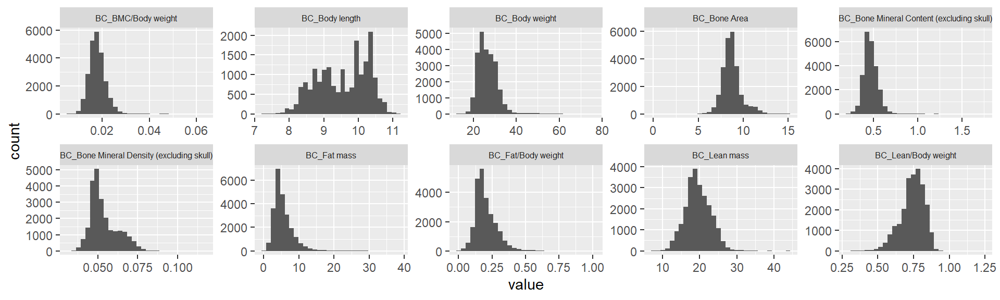
Rank Z transformation
library(RNOmni)
ap.mat.rank <- ap.mat
dim(ap.mat.rank)[1] 23861 13ap.mat.rank <- ap.mat.rank[complete.cases(ap.mat.rank),]
dim(ap.mat.rank)[1] 18538 13dim(ap.mat)[1] 23861 13ap.mat <- ap.mat[complete.cases(ap.mat),]
dim(ap.mat)[1] 18538 13#rankZ <- function(x){ qnorm((rank(x,na.last="keep")-0.5)/sum(!is.na(x))) }
#ap.mat.rank <- ap.mat
#dim(ap.mat.rank)
#ap.mat.rank <- ap.mat.rank[complete.cases(ap.mat.rank),]
#dim(ap.mat.rank)
#library(RNOmni)
#ap.mat.rank <- cbind(ap.mat.rank[,1:3], apply(ap.mat.rank[,-1:-3], 2, RankNorm))
ap.mat.rank <- cbind(ap.mat.rank[,1:3], apply(ap.mat.rank[,-1:-3], 2, RankNorm))
ggplot(melt(ap.mat.rank), aes(x=value)) +
geom_histogram() +
facet_wrap(~variable, scales="free", ncol=5)+
theme(strip.text.x = element_text(size = 6))Using sex, phenotyping_center, strain_name as id variables`stat_bin()` using `bins = 30`. Pick better value with `binwidth`.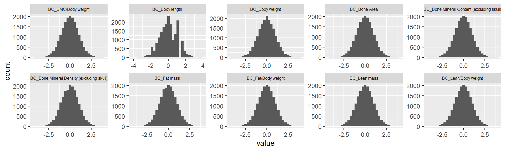
[TASK 1] Principal Variance Component Analysis
Please conduct a PVCA analysis on the phenotype matrix data (op.mat[,-1:-3]). I think you can measure the proportion of variance explained by each important covariate (sex, phenotyping_center, strain_name)
#source("~/Google Drive Miami/Miami_IMPC/reference/PVCA/examples/PVCA.R")
source("G:/.shortcut-targets-by-id/1SeBOMb4GZ2Gkldxp4QNEnFWHOiAqtRTz/Miami_IMPC/reference/PVCA/examples/PVCA.R")
meta <- ap.mat.rank[,1:3] ## looking at covariates sex, phenotyping_center, and strain_name
head(meta) sex phenotyping_center strain_name
39641 male HMGU C57BL/6NCrl
39643 female HMGU C57BL/6NCrl
39657 male HMGU C57BL/6NCrl
39750 female HMGU C57BL/6NCrl
39763 female HMGU C57BL/6NCrl
39773 female HMGU C57BL/6NCrldim(meta)[1] 18538 3summary(meta) # variables are still characters sex phenotyping_center strain_name
Length:18538 Length:18538 Length:18538
Class :character Class :character Class :character
Mode :character Mode :character Mode :character meta[sapply(meta, is.character)] <- lapply(meta[sapply(meta, is.character)], as.factor)
summary(meta) # now all variables are converted to factors sex phenotyping_center strain_name
female:9282 WTSI :4573 B6Brd;B6Dnk;B6N-Tyr<c-Brd>: 176
male :9256 JAX :3675 C57BL/6N :9127
ICS :2075 C57BL/6NCrl :2997
BCM :1832 C57BL/6NJ :3675
RBRC :1692 C57BL/6NJcl : 728
UC Davis:1441 C57BL/6NTac :1835
(Other) :3250 chisq.test(meta[,1],meta[,2])
Pearson's Chi-squared test
data: meta[, 1] and meta[, 2]
X-squared = 13.572, df = 10, p-value = 0.1934chisq.test(meta[,2],meta[,3]) Warning in chisq.test(meta[, 2], meta[, 3]): Chi-squared approximation may be
incorrect
Pearson's Chi-squared test
data: meta[, 2] and meta[, 3]
X-squared = 59770, df = 50, p-value < 2.2e-16meta<-meta[,-3] # phenotyping_center and strain_name strongly associated and this caused confouding in PVCA analysis so strain_name dropped.
G <- t(ap.mat.rank[,-1:-3]) ## phenotype matrix data
set.seed(09302021)
# Perform PVCA for 10 random samples of size 1000 (more computationally efficient)
pvca.res <- matrix(nrow=10, ncol=3)
for (i in 1:10){
sample <- sample(1:ncol(G), 1000, replace=FALSE)
pvca.res[i,] <- PVCA(G[,sample], meta[sample,], threshold=0.6, inter=FALSE)
}
# Average effect size across samples
pvca.means <- colMeans(pvca.res)
names(pvca.means) <- c(colnames(meta), "resid")
# Plot PVCA
pvca.plot <- PlotPVCA(pvca.means, "PVCA of Phenotype Matrix Data")
pvca.plot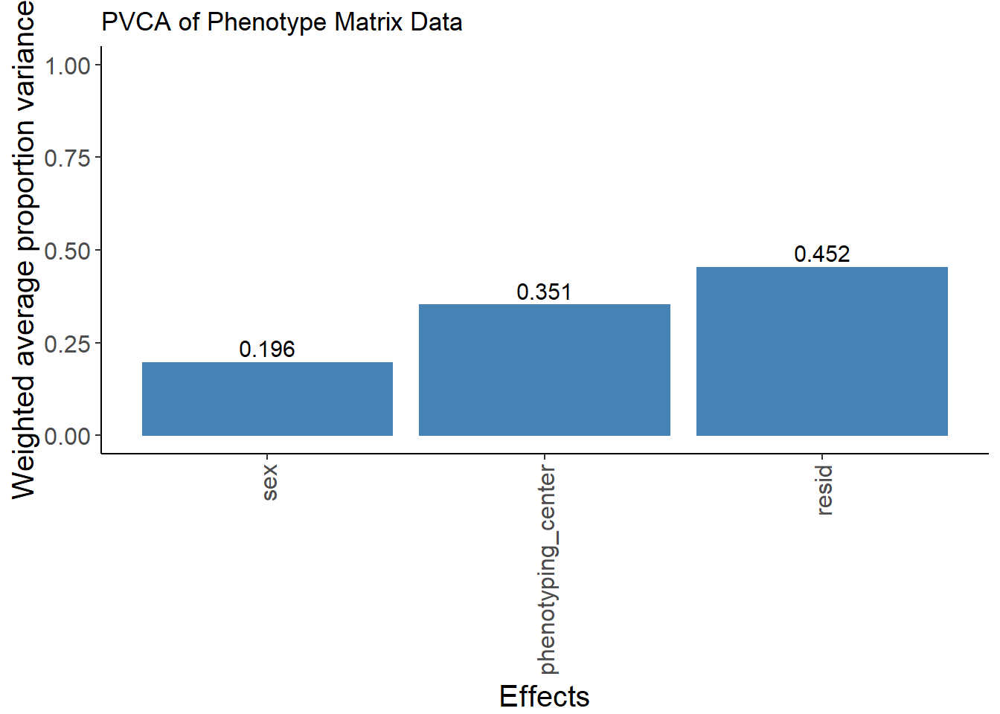
#ggsave(filename = "pvca_plot.png", pvca.plot, width=8, height=6)[TASK 2] ComBat analysis - Removing batch effects
If a large proportion of variance is explained by these covariats, we need to remove their effects from the data.
library(sva)Loading required package: mgcvLoading required package: nlme
Attaching package: 'nlme'The following object is masked from 'package:lme4':
lmListThe following object is masked from 'package:dplyr':
collapseThis is mgcv 1.8-36. For overview type 'help("mgcv-package")'.Loading required package: genefilter
Attaching package: 'genefilter'The following object is masked from 'package:ComplexHeatmap':
dist2Loading required package: BiocParallelcombat_komp = ComBat(dat=G, batch=meta$phenotyping_center, par.prior=TRUE, prior.plots=TRUE, mod=NULL)Found11batchesAdjusting for0covariate(s) or covariate level(s)Standardizing Data across genesFitting L/S model and finding priorsFinding parametric adjustmentsAdjusting the Data
combat_komp[,1:3] 39641 39643 39657
BC_BMC/Body weight -0.54465772 0.76242613 -0.8478037
BC_Body length 0.23714642 -0.15635195 0.2371464
BC_Body weight 0.90694779 -0.38659680 0.9844317
BC_Bone Area 0.41881733 0.15104262 1.0646332
BC_Bone Mineral Content (excluding skull) 0.58720884 0.15610494 0.3622582
BC_Bone Mineral Density (excluding skull) 0.37590404 0.04804937 -0.5216066
BC_Fat mass 0.06021668 -0.01420044 0.9679394
BC_Fat/Body weight -0.38016638 0.16405541 0.6313684
BC_Lean mass 1.24681829 -0.49595622 0.1077335
BC_Lean/Body weight 0.72009214 -0.27108379 -0.6575397G[,1:3] # for comparison, combat_komp is same form and same dimensions as G 39641 39643 39657
BC_BMC/Body weight 0.61537676 1.3908581 0.43552296
BC_Body length 0.04917004 -0.1811585 0.04917004
BC_Body weight 0.72940618 -0.3554534 0.79438976
BC_Bone Area -0.05160698 -0.2731793 0.48277848
BC_Bone Mineral Content (excluding skull) 1.43981495 1.1313384 1.27885140
BC_Bone Mineral Density (excluding skull) 1.37276777 1.2301457 0.98233626
BC_Fat mass 0.70042463 0.6502323 1.31265922
BC_Fat/Body weight 0.54873676 0.9724173 1.33622379
BC_Lean mass 0.64897996 -1.1933776 -0.55519275
BC_Lean/Body weight -0.13426402 -1.1704055 -1.57439333PVCA on residuals from ComBat and plot it (center effect should be much lower)
set.seed(09302021)
# Perform PVCA for 10 samples (more computationally efficient)
pvca.res.nobatch <- matrix(nrow=10, ncol=3)
for (i in 1:10){
sample <- sample(1:ncol(combat_komp), 1000, replace=FALSE)
pvca.res.nobatch[i,] <- PVCA(combat_komp[,sample], meta[sample,], threshold=0.6, inter=FALSE)
}boundary (singular) fit: see ?isSingular
boundary (singular) fit: see ?isSingular
boundary (singular) fit: see ?isSingular
boundary (singular) fit: see ?isSingular
boundary (singular) fit: see ?isSingular
boundary (singular) fit: see ?isSingular# Average effect size across samples
pvca.means.nobatch <- colMeans(pvca.res.nobatch)
names(pvca.means.nobatch) <- c(colnames(meta), "resid")
# Plot PVCA
pvca.plot.nobatch <- PlotPVCA(pvca.means.nobatch, "PVCA of Phenotype Matrix Data with Reduced Batch Effect")
pvca.plot.nobatch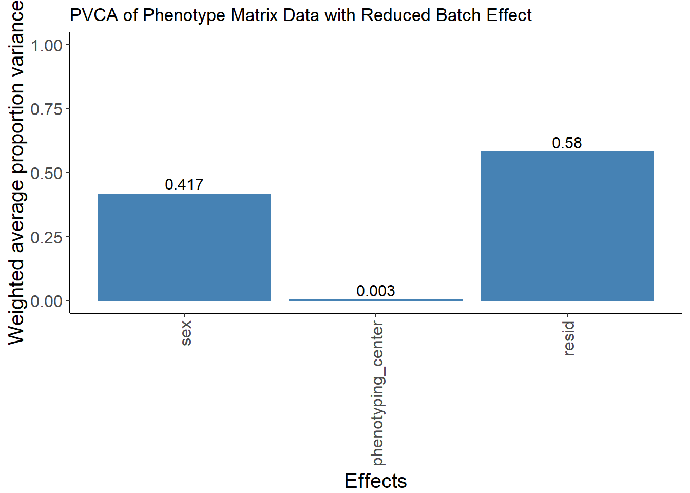
The batch effect of phenotyping center has been largely removed.
Compute correlations between CSD, GS, OF, PPI phenotypes
ap.cor.rank <- cor(ap.mat.rank[,-1:-3], use="pairwise.complete.obs") # pearson correlation coefficient
#ap.cor <- cor(ap.mat[,-1:-3], use="pairwise.complete.obs") # pearson correlation coefficient
ap.cor <- cor(ap.mat[,-1:-3], use="pairwise.complete.obs", method="spearman")
ap.cor.combat <- cor(t(combat_komp), use="pairwise.complete.obs")
#ap.cor <- cor(ap.mat[,-1:-3], use="pairwise.complete.obs", method="spearman") # use original phenotype data
#ap.cor <- cor(ap.mat.rank[,-1:-3], use="pairwise.complete.obs", method="spearman") # use rankZ transformed phenotype data
#col <- colorRampPalette(c("steelblue", "white", "darkorange"))(100)
#ap.cor.out <- pheatmap(ap.cor, cluster_rows = T, cluster_cols=T, show_colnames=F, col=col, fontsize = 7)
#col <- colorRampPalette(c("white","darkorange"))(100)
#pheatmap(abs(op.cor), cluster_rows = T, cluster_cols=T, show_colnames=F, col=col)
if(FALSE){
#pdf("~/Google Drive Miami/Miami_IMPC/output/genetic_corr_btw_phenotypes.pdf", width = 11, height = 8)
pdf("~/Google Drive Miami/Miami_IMPC/output/genetic_corr_btw_phenotypes_Pearson_BC.pdf", width = 4.9, height = 2)
ht = Heatmap(ap.cor, show_column_names = F, row_names_gp = gpar(fontsize = 9), name="Corr")
draw(ht)
dev.off()
pdf("~/Google Drive Miami/Miami_IMPC/output/genetic_corr_btw_phenotypes_rankZ_BC.pdf", width = 4.9, height = 2)
ht = Heatmap(ap.cor.rank, show_column_names = F, row_names_gp = gpar(fontsize = 9), name="Corr")
draw(ht)
dev.off()
pdf("~/Google Drive Miami/Miami_IMPC/output/genetic_corr_btw_phenotypes_ComBat_Adjusted_BC.pdf", width = 4.9, height = 2)
ht = Heatmap(ap.cor.combat, show_column_names = F, row_names_gp = gpar(fontsize = 9), name="Corr")
draw(ht)
dev.off()
}
pheno.list <- rownames(ap.cor)KOMPV10.1 association summary stat
Read KOMPv10.1
# KOMPv10.1.file = "~/Google Drive Miami/Miami_IMPC/data/v10.1/IMPC_ALL_statistical_results.csv.gz"
KOMPv10.1.file = "G:/.shortcut-targets-by-id/1SeBOMb4GZ2Gkldxp4QNEnFWHOiAqtRTz/Miami_IMPC/data/v10.1/IMPC_ALL_statistical_results.csv.gz"
KOMPv10.1 = fread(KOMPv10.1.file, header=TRUE, sep=",")
KOMPv10.1$parameter_name <- trimws(KOMPv10.1$parameter_name) #remove white spaces
KOMPv10.1$proc_param_name <- paste0(KOMPv10.1$procedure_name,"_",KOMPv10.1$parameter_name)
#head(KOMPv10.1, 10)
#sort(table(KOMPv10.1$procedure_name))
#sort(table(KOMPv10.1$proc_param_name), decreasing = TRUE)[1:100]
#sort(table(KOMPv10.1$procedure_name))
#table(KOMPv10.1$procedure_name, KOMPv10.1$parameter_name)
#table(KOMPv10.1$procedure_name, KOMPv10.1$statistical_method)
table(KOMPv10.1$procedure_name, KOMPv10.1$data_type)
adult-gross-path
Acoustic Startle and Pre-pulse Inhibition (PPI) 0
Acoustic Startle&PPI 0
Allergy (GMC) 0
Anti-nuclear antibody assay 0
Antigen Specific Immunoglobulin Assay 0
Auditory Brain Stem Response 0
Body Composition (DEXA lean/fat) 0
Body Weight 0
Bodyweight (GMC) 0
Bone marrow immunophenotyping 0
Buffy coat peripheral blood leukocyte immunophenotyping 0
Calorimetry 0
Challenge Whole Body Plethysmography 0
Clinical Chemistry 0
Clinical chemistry (GMC) 0
Combined SHIRPA and Dysmorphology 0
Cortical Bone MicroCT 0
DEXA 0
Dexa-scan analysis 0
DSS Histology 0
Dysmorphology 0
Ear epidermis immunophenotyping 0
ECG (Electrocardiogram) (GMC) 0
Echo 0
Electrocardiogram (ECG) 0
Electroconvulsive Threshold Testing 0
Electroretinography 0
ELISA (GMC) 0
ERG (Electroretinogram) (GMC) 0
Eye Morphology 0
Eye size (GMC) 0
FACS (GMC) 0
FACs Analysis 0
Fasted Clinical Chemistry 0
Fear Conditioning 0
Femoral Microradiography 0
Fertility of Homozygous Knock-out Mice 0
Food efficiency (GMC) 0
Grip-Strength 0
Grip Strength 0
Grip Strength (GMC) 0
Gross Morphology Embryo E12.5 0
Gross Morphology Embryo E14.5-E15.5 0
Gross Morphology Embryo E18.5 0
Gross Morphology Embryo E9.5 0
Gross Morphology Placenta E12.5 0
Gross Morphology Placenta E14.5-E15.5 0
Gross Morphology Placenta E18.5 0
Gross Morphology Placenta E9.5 0
Gross Pathology and Tissue Collection 633844
Haematology 0
Haematology (GMC) 0
Haematology test 0
Heart Dissection 0
Heart Weight 0
Heart weight/tibia length 0
Hematology 0
Hole-board Exploration 0
Holeboard (GMC) 0
Hot Plate 0
Immunoglobulin 0
Indirect Calorimetry 0
Indirect ophthalmoscopy 0
Insulin Blood Level 0
Intraperitoneal glucose tolerance test (IPGTT) 0
IPGTT 0
Light-Dark Test 0
Mesenteric Lymph Node Immunophenotyping 0
Modified SHIRPA 0
Nociception Hotplate (GMC) 0
Open-field 0
Open Field 0
Ophthalmoscope 0
Organ Weight 0
pDexa (GMC) 0
Plasma Chemistry 0
Rotarod 0
Rotarod A (GMC) 0
Shirpa (GMC) 0
Simplified IPGTT 0
Sleep Wake 0
Slit Lamp 0
Spleen Immunophenotyping 0
Spontaneous breathing (GMC) 0
Tail Suspension 0
Three-point Bend 0
Trabecular Bone MicroCT 0
Trichuris 0
Urinalysis 0
Vertebra Compression 0
Vertebral Microradiography 0
Viability E12.5 Secondary Screen 0
Viability E14.5-E15.5 Secondary Screen 0
Viability E18.5 Secondary Screen 0
Viability E9.5 Secondary Screen 0
Viability Primary Screen 0
Whole blood peripheral blood leukocyte immunophenotyping 0
X-ray 0
X-Ray 0
X-Ray (GMC) 0
categorical embryo
Acoustic Startle and Pre-pulse Inhibition (PPI) 0 0
Acoustic Startle&PPI 0 0
Allergy (GMC) 0 0
Anti-nuclear antibody assay 984 0
Antigen Specific Immunoglobulin Assay 0 0
Auditory Brain Stem Response 0 0
Body Composition (DEXA lean/fat) 0 0
Body Weight 0 0
Bodyweight (GMC) 0 0
Bone marrow immunophenotyping 0 0
Buffy coat peripheral blood leukocyte immunophenotyping 0 0
Calorimetry 0 0
Challenge Whole Body Plethysmography 0 0
Clinical Chemistry 0 0
Clinical chemistry (GMC) 0 0
Combined SHIRPA and Dysmorphology 156103 0
Cortical Bone MicroCT 0 0
DEXA 0 0
Dexa-scan analysis 0 0
DSS Histology 21 0
Dysmorphology 17289 0
Ear epidermis immunophenotyping 0 0
ECG (Electrocardiogram) (GMC) 0 0
Echo 0 0
Electrocardiogram (ECG) 0 0
Electroconvulsive Threshold Testing 0 0
Electroretinography 0 0
ELISA (GMC) 0 0
ERG (Electroretinogram) (GMC) 0 0
Eye Morphology 85613 0
Eye size (GMC) 0 0
FACS (GMC) 0 0
FACs Analysis 0 0
Fasted Clinical Chemistry 0 0
Fear Conditioning 0 0
Femoral Microradiography 0 0
Fertility of Homozygous Knock-out Mice 0 0
Food efficiency (GMC) 0 0
Grip-Strength 0 0
Grip Strength 0 0
Grip Strength (GMC) 0 0
Gross Morphology Embryo E12.5 0 40122
Gross Morphology Embryo E14.5-E15.5 0 13670
Gross Morphology Embryo E18.5 0 21665
Gross Morphology Embryo E9.5 0 23135
Gross Morphology Placenta E12.5 0 4623
Gross Morphology Placenta E14.5-E15.5 0 2685
Gross Morphology Placenta E18.5 0 2976
Gross Morphology Placenta E9.5 0 3827
Gross Pathology and Tissue Collection 0 0
Haematology 0 0
Haematology (GMC) 0 0
Haematology test 0 0
Heart Dissection 570 0
Heart Weight 0 0
Heart weight/tibia length 103 0
Hematology 0 0
Hole-board Exploration 0 0
Holeboard (GMC) 0 0
Hot Plate 0 0
Immunoglobulin 0 0
Indirect Calorimetry 0 0
Indirect ophthalmoscopy 3040 0
Insulin Blood Level 0 0
Intraperitoneal glucose tolerance test (IPGTT) 0 0
IPGTT 0 0
Light-Dark Test 0 0
Mesenteric Lymph Node Immunophenotyping 0 0
Modified SHIRPA 20876 0
Nociception Hotplate (GMC) 0 0
Open-field 0 0
Open Field 0 0
Ophthalmoscope 8246 0
Organ Weight 0 0
pDexa (GMC) 0 0
Plasma Chemistry 0 0
Rotarod 0 0
Rotarod A (GMC) 0 0
Shirpa (GMC) 0 0
Simplified IPGTT 0 0
Sleep Wake 0 0
Slit Lamp 14988 0
Spleen Immunophenotyping 0 0
Spontaneous breathing (GMC) 0 0
Tail Suspension 1 0
Three-point Bend 0 0
Trabecular Bone MicroCT 0 0
Trichuris 10 0
Urinalysis 0 0
Vertebra Compression 0 0
Vertebral Microradiography 0 0
Viability E12.5 Secondary Screen 0 422
Viability E14.5-E15.5 Secondary Screen 0 210
Viability E18.5 Secondary Screen 0 176
Viability E9.5 Secondary Screen 0 316
Viability Primary Screen 0 0
Whole blood peripheral blood leukocyte immunophenotyping 0 0
X-ray 60705 0
X-Ray 1791 0
X-Ray (GMC) 47 0
line
Acoustic Startle and Pre-pulse Inhibition (PPI) 0
Acoustic Startle&PPI 0
Allergy (GMC) 0
Anti-nuclear antibody assay 0
Antigen Specific Immunoglobulin Assay 0
Auditory Brain Stem Response 0
Body Composition (DEXA lean/fat) 0
Body Weight 0
Bodyweight (GMC) 0
Bone marrow immunophenotyping 0
Buffy coat peripheral blood leukocyte immunophenotyping 0
Calorimetry 0
Challenge Whole Body Plethysmography 0
Clinical Chemistry 0
Clinical chemistry (GMC) 0
Combined SHIRPA and Dysmorphology 0
Cortical Bone MicroCT 0
DEXA 0
Dexa-scan analysis 0
DSS Histology 0
Dysmorphology 0
Ear epidermis immunophenotyping 0
ECG (Electrocardiogram) (GMC) 0
Echo 0
Electrocardiogram (ECG) 0
Electroconvulsive Threshold Testing 0
Electroretinography 0
ELISA (GMC) 0
ERG (Electroretinogram) (GMC) 0
Eye Morphology 0
Eye size (GMC) 0
FACS (GMC) 0
FACs Analysis 0
Fasted Clinical Chemistry 0
Fear Conditioning 0
Femoral Microradiography 0
Fertility of Homozygous Knock-out Mice 7512
Food efficiency (GMC) 0
Grip-Strength 0
Grip Strength 0
Grip Strength (GMC) 0
Gross Morphology Embryo E12.5 0
Gross Morphology Embryo E14.5-E15.5 0
Gross Morphology Embryo E18.5 0
Gross Morphology Embryo E9.5 0
Gross Morphology Placenta E12.5 0
Gross Morphology Placenta E14.5-E15.5 0
Gross Morphology Placenta E18.5 0
Gross Morphology Placenta E9.5 0
Gross Pathology and Tissue Collection 0
Haematology 0
Haematology (GMC) 0
Haematology test 0
Heart Dissection 0
Heart Weight 0
Heart weight/tibia length 0
Hematology 0
Hole-board Exploration 0
Holeboard (GMC) 0
Hot Plate 0
Immunoglobulin 0
Indirect Calorimetry 0
Indirect ophthalmoscopy 0
Insulin Blood Level 0
Intraperitoneal glucose tolerance test (IPGTT) 0
IPGTT 0
Light-Dark Test 0
Mesenteric Lymph Node Immunophenotyping 0
Modified SHIRPA 0
Nociception Hotplate (GMC) 0
Open-field 0
Open Field 0
Ophthalmoscope 0
Organ Weight 0
pDexa (GMC) 0
Plasma Chemistry 0
Rotarod 0
Rotarod A (GMC) 0
Shirpa (GMC) 0
Simplified IPGTT 0
Sleep Wake 0
Slit Lamp 0
Spleen Immunophenotyping 0
Spontaneous breathing (GMC) 0
Tail Suspension 0
Three-point Bend 0
Trabecular Bone MicroCT 0
Trichuris 0
Urinalysis 0
Vertebra Compression 0
Vertebral Microradiography 0
Viability E12.5 Secondary Screen 0
Viability E14.5-E15.5 Secondary Screen 0
Viability E18.5 Secondary Screen 0
Viability E9.5 Secondary Screen 0
Viability Primary Screen 7362
Whole blood peripheral blood leukocyte immunophenotyping 0
X-ray 0
X-Ray 0
X-Ray (GMC) 0
unidimensional
Acoustic Startle and Pre-pulse Inhibition (PPI) 20676
Acoustic Startle&PPI 8356
Allergy (GMC) 27
Anti-nuclear antibody assay 982
Antigen Specific Immunoglobulin Assay 482
Auditory Brain Stem Response 2149
Body Composition (DEXA lean/fat) 42582
Body Weight 7263
Bodyweight (GMC) 27
Bone marrow immunophenotyping 8043
Buffy coat peripheral blood leukocyte immunophenotyping 7560
Calorimetry 731
Challenge Whole Body Plethysmography 46
Clinical Chemistry 99693
Clinical chemistry (GMC) 548
Combined SHIRPA and Dysmorphology 3645
Cortical Bone MicroCT 18
DEXA 5529
Dexa-scan analysis 4516
DSS Histology 133
Dysmorphology 0
Ear epidermis immunophenotyping 3112
ECG (Electrocardiogram) (GMC) 130
Echo 16196
Electrocardiogram (ECG) 32701
Electroconvulsive Threshold Testing 409
Electroretinography 5
ELISA (GMC) 96
ERG (Electroretinogram) (GMC) 148
Eye Morphology 3263
Eye size (GMC) 34
FACS (GMC) 185
FACs Analysis 3644
Fasted Clinical Chemistry 3744
Fear Conditioning 420
Femoral Microradiography 12
Fertility of Homozygous Knock-out Mice 0
Food efficiency (GMC) 135
Grip-Strength 2472
Grip Strength 19766
Grip Strength (GMC) 19
Gross Morphology Embryo E12.5 0
Gross Morphology Embryo E14.5-E15.5 0
Gross Morphology Embryo E18.5 0
Gross Morphology Embryo E9.5 0
Gross Morphology Placenta E12.5 0
Gross Morphology Placenta E14.5-E15.5 0
Gross Morphology Placenta E18.5 0
Gross Morphology Placenta E9.5 0
Gross Pathology and Tissue Collection 0
Haematology 4731
Haematology (GMC) 428
Haematology test 6038
Heart Dissection 1510
Heart Weight 4312
Heart weight/tibia length 776
Hematology 49606
Hole-board Exploration 991
Holeboard (GMC) 513
Hot Plate 2044
Immunoglobulin 929
Indirect Calorimetry 4919
Indirect ophthalmoscopy 0
Insulin Blood Level 2081
Intraperitoneal glucose tolerance test (IPGTT) 12990
IPGTT 408
Light-Dark Test 11077
Mesenteric Lymph Node Immunophenotyping 44829
Modified SHIRPA 1245
Nociception Hotplate (GMC) 91
Open-field 7458
Open Field 50546
Ophthalmoscope 757
Organ Weight 1671
pDexa (GMC) 321
Plasma Chemistry 894
Rotarod 1798
Rotarod A (GMC) 6
Shirpa (GMC) 197
Simplified IPGTT 622
Sleep Wake 5333
Slit Lamp 0
Spleen Immunophenotyping 56372
Spontaneous breathing (GMC) 576
Tail Suspension 534
Three-point Bend 30
Trabecular Bone MicroCT 28
Trichuris 0
Urinalysis 1034
Vertebra Compression 21
Vertebral Microradiography 14
Viability E12.5 Secondary Screen 0
Viability E14.5-E15.5 Secondary Screen 0
Viability E18.5 Secondary Screen 0
Viability E9.5 Secondary Screen 0
Viability Primary Screen 0
Whole blood peripheral blood leukocyte immunophenotyping 0
X-ray 2543
X-Ray 231
X-Ray (GMC) 0
unidimensional-ReferenceRange
Acoustic Startle and Pre-pulse Inhibition (PPI) 0
Acoustic Startle&PPI 0
Allergy (GMC) 0
Anti-nuclear antibody assay 0
Antigen Specific Immunoglobulin Assay 0
Auditory Brain Stem Response 26586
Body Composition (DEXA lean/fat) 0
Body Weight 0
Bodyweight (GMC) 0
Bone marrow immunophenotyping 0
Buffy coat peripheral blood leukocyte immunophenotyping 0
Calorimetry 0
Challenge Whole Body Plethysmography 0
Clinical Chemistry 0
Clinical chemistry (GMC) 0
Combined SHIRPA and Dysmorphology 0
Cortical Bone MicroCT 0
DEXA 0
Dexa-scan analysis 0
DSS Histology 0
Dysmorphology 0
Ear epidermis immunophenotyping 0
ECG (Electrocardiogram) (GMC) 0
Echo 0
Electrocardiogram (ECG) 0
Electroconvulsive Threshold Testing 0
Electroretinography 0
ELISA (GMC) 0
ERG (Electroretinogram) (GMC) 0
Eye Morphology 0
Eye size (GMC) 0
FACS (GMC) 0
FACs Analysis 0
Fasted Clinical Chemistry 0
Fear Conditioning 0
Femoral Microradiography 0
Fertility of Homozygous Knock-out Mice 0
Food efficiency (GMC) 0
Grip-Strength 0
Grip Strength 0
Grip Strength (GMC) 0
Gross Morphology Embryo E12.5 0
Gross Morphology Embryo E14.5-E15.5 0
Gross Morphology Embryo E18.5 0
Gross Morphology Embryo E9.5 0
Gross Morphology Placenta E12.5 0
Gross Morphology Placenta E14.5-E15.5 0
Gross Morphology Placenta E18.5 0
Gross Morphology Placenta E9.5 0
Gross Pathology and Tissue Collection 0
Haematology 0
Haematology (GMC) 0
Haematology test 0
Heart Dissection 0
Heart Weight 0
Heart weight/tibia length 0
Hematology 0
Hole-board Exploration 0
Holeboard (GMC) 0
Hot Plate 0
Immunoglobulin 0
Indirect Calorimetry 0
Indirect ophthalmoscopy 0
Insulin Blood Level 0
Intraperitoneal glucose tolerance test (IPGTT) 0
IPGTT 0
Light-Dark Test 0
Mesenteric Lymph Node Immunophenotyping 0
Modified SHIRPA 0
Nociception Hotplate (GMC) 0
Open-field 0
Open Field 0
Ophthalmoscope 0
Organ Weight 0
pDexa (GMC) 0
Plasma Chemistry 0
Rotarod 0
Rotarod A (GMC) 0
Shirpa (GMC) 0
Simplified IPGTT 0
Sleep Wake 0
Slit Lamp 0
Spleen Immunophenotyping 0
Spontaneous breathing (GMC) 0
Tail Suspension 0
Three-point Bend 0
Trabecular Bone MicroCT 0
Trichuris 0
Urinalysis 0
Vertebra Compression 0
Vertebral Microradiography 0
Viability E12.5 Secondary Screen 0
Viability E14.5-E15.5 Secondary Screen 0
Viability E18.5 Secondary Screen 0
Viability E9.5 Secondary Screen 0
Viability Primary Screen 0
Whole blood peripheral blood leukocyte immunophenotyping 29520
X-ray 10450
X-Ray 414
X-Ray (GMC) 0#dat <- KOMPv10.1 %>% select(procedure_name=="Gross Pathology and Tissue Collection")
# extract unidimensional data only.
dim(KOMPv10.1)[1] 1779903 88KOMPv10.1.ud <- KOMPv10.1 %>% filter(data_type=="unidimensional")
dim(KOMPv10.1.ud)[1] 580001 88Heatmap Gene - Pheno
Subset OF data and generate Z-score
table(allpheno$procedure_name)
Body Composition (DEXA lean/fat)
234305 #"Auditory Brain Stem Response"
#"Clinical Chemistry"
#"Body Composition (DEXA lean/fat)"
#"Intraperitoneal glucose tolerance test (IPGTT)"
#"Hematology"
# count the number of tests in each phenotype
proc.list <- table(KOMPv10.1.ud$procedure_name)
#proc.list <- proc.list[proc.list>1000]
proc.list
Acoustic Startle and Pre-pulse Inhibition (PPI)
20676
Acoustic Startle&PPI
8356
Allergy (GMC)
27
Anti-nuclear antibody assay
982
Antigen Specific Immunoglobulin Assay
482
Auditory Brain Stem Response
2149
Body Composition (DEXA lean/fat)
42582
Body Weight
7263
Bodyweight (GMC)
27
Bone marrow immunophenotyping
8043
Buffy coat peripheral blood leukocyte immunophenotyping
7560
Calorimetry
731
Challenge Whole Body Plethysmography
46
Clinical Chemistry
99693
Clinical chemistry (GMC)
548
Combined SHIRPA and Dysmorphology
3645
Cortical Bone MicroCT
18
DEXA
5529
Dexa-scan analysis
4516
DSS Histology
133
Ear epidermis immunophenotyping
3112
ECG (Electrocardiogram) (GMC)
130
Echo
16196
Electrocardiogram (ECG)
32701
Electroconvulsive Threshold Testing
409
Electroretinography
5
ELISA (GMC)
96
ERG (Electroretinogram) (GMC)
148
Eye Morphology
3263
Eye size (GMC)
34
FACS (GMC)
185
FACs Analysis
3644
Fasted Clinical Chemistry
3744
Fear Conditioning
420
Femoral Microradiography
12
Food efficiency (GMC)
135
Grip-Strength
2472
Grip Strength
19766
Grip Strength (GMC)
19
Haematology
4731
Haematology (GMC)
428
Haematology test
6038
Heart Dissection
1510
Heart Weight
4312
Heart weight/tibia length
776
Hematology
49606
Hole-board Exploration
991
Holeboard (GMC)
513
Hot Plate
2044
Immunoglobulin
929
Indirect Calorimetry
4919
Insulin Blood Level
2081
Intraperitoneal glucose tolerance test (IPGTT)
12990
IPGTT
408
Light-Dark Test
11077
Mesenteric Lymph Node Immunophenotyping
44829
Modified SHIRPA
1245
Nociception Hotplate (GMC)
91
Open-field
7458
Open Field
50546
Ophthalmoscope
757
Organ Weight
1671
pDexa (GMC)
321
Plasma Chemistry
894
Rotarod
1798
Rotarod A (GMC)
6
Shirpa (GMC)
197
Simplified IPGTT
622
Sleep Wake
5333
Spleen Immunophenotyping
56372
Spontaneous breathing (GMC)
576
Tail Suspension
534
Three-point Bend
30
Trabecular Bone MicroCT
28
Urinalysis
1034
Vertebra Compression
21
Vertebral Microradiography
14
X-ray
2543
X-Ray
231 length(proc.list)[1] 79pheno.list <- table(KOMPv10.1.ud$proc_param_name)
pheno.list <- pheno.list[pheno.list>1000] # find list of phenotypes with more than 1000 tests (i.e. 1000 mutants tested)
pheno.list <- names(pheno.list)
pheno.list [1] "Acoustic Startle and Pre-pulse Inhibition (PPI)_% Pre-pulse inhibition - Global"
[2] "Acoustic Startle and Pre-pulse Inhibition (PPI)_% Pre-pulse inhibition - PPI1"
[3] "Acoustic Startle and Pre-pulse Inhibition (PPI)_% Pre-pulse inhibition - PPI2"
[4] "Acoustic Startle and Pre-pulse Inhibition (PPI)_% Pre-pulse inhibition - PPI3"
[5] "Acoustic Startle and Pre-pulse Inhibition (PPI)_% Pre-pulse inhibition - PPI4"
[6] "Acoustic Startle and Pre-pulse Inhibition (PPI)_Response amplitude - S"
[7] "Body Composition (DEXA lean/fat)_BMC/Body weight"
[8] "Body Composition (DEXA lean/fat)_Body length"
[9] "Body Composition (DEXA lean/fat)_Bone Area"
[10] "Body Composition (DEXA lean/fat)_Bone Mineral Content (excluding skull)"
[11] "Body Composition (DEXA lean/fat)_Bone Mineral Density (excluding skull)"
[12] "Body Composition (DEXA lean/fat)_Fat mass"
[13] "Body Composition (DEXA lean/fat)_Fat/Body weight"
[14] "Body Composition (DEXA lean/fat)_Lean mass"
[15] "Body Composition (DEXA lean/fat)_Lean/Body weight"
[16] "Body Weight_Body Weight"
[17] "Clinical Chemistry_Alanine aminotransferase"
[18] "Clinical Chemistry_Albumin"
[19] "Clinical Chemistry_Alkaline phosphatase"
[20] "Clinical Chemistry_Alpha-amylase"
[21] "Clinical Chemistry_Aspartate aminotransferase"
[22] "Clinical Chemistry_Calcium"
[23] "Clinical Chemistry_Chloride"
[24] "Clinical Chemistry_Creatine kinase"
[25] "Clinical Chemistry_Creatinine"
[26] "Clinical Chemistry_Free fatty acids"
[27] "Clinical Chemistry_Fructosamine"
[28] "Clinical Chemistry_Glucose"
[29] "Clinical Chemistry_Glycerol"
[30] "Clinical Chemistry_HDL-cholesterol"
[31] "Clinical Chemistry_Iron"
[32] "Clinical Chemistry_LDL-cholesterol"
[33] "Clinical Chemistry_Magnesium"
[34] "Clinical Chemistry_Phosphorus"
[35] "Clinical Chemistry_Potassium"
[36] "Clinical Chemistry_Sodium"
[37] "Clinical Chemistry_Total bilirubin"
[38] "Clinical Chemistry_Total cholesterol"
[39] "Clinical Chemistry_Total protein"
[40] "Clinical Chemistry_Triglyceride"
[41] "Clinical Chemistry_Triglycerides"
[42] "Clinical Chemistry_Urea"
[43] "Clinical Chemistry_Urea (Blood Urea Nitrogen - BUN)"
[44] "Combined SHIRPA and Dysmorphology_Locomotor activity"
[45] "Echo_Cardiac Output"
[46] "Echo_Ejection Fraction"
[47] "Echo_Fractional Shortening"
[48] "Echo_HR"
[49] "Echo_LVAWd"
[50] "Echo_LVIDd"
[51] "Echo_LVIDs"
[52] "Echo_LVPWd"
[53] "Echo_LVPWs"
[54] "Echo_Stroke Volume"
[55] "Electrocardiogram (ECG)_CV"
[56] "Electrocardiogram (ECG)_HR"
[57] "Electrocardiogram (ECG)_HRV"
[58] "Electrocardiogram (ECG)_PQ"
[59] "Electrocardiogram (ECG)_PR"
[60] "Electrocardiogram (ECG)_QRS"
[61] "Electrocardiogram (ECG)_QTc"
[62] "Electrocardiogram (ECG)_QTc Dispersion"
[63] "Electrocardiogram (ECG)_rMSSD"
[64] "Electrocardiogram (ECG)_RR"
[65] "Electrocardiogram (ECG)_ST"
[66] "Grip Strength_Forelimb and hindlimb grip strength measurement mean"
[67] "Grip Strength_Forelimb and hindlimb grip strength normalised against body weight"
[68] "Grip Strength_Forelimb grip strength measurement mean"
[69] "Grip Strength_Forelimb grip strength normalised against body weight"
[70] "Heart Weight_Heart weight"
[71] "Hematology_Basophil cell count"
[72] "Hematology_Basophil differential count"
[73] "Hematology_Eosinophil cell count"
[74] "Hematology_Eosinophil differential count"
[75] "Hematology_Hematocrit"
[76] "Hematology_Hemoglobin"
[77] "Hematology_Lymphocyte cell count"
[78] "Hematology_Lymphocyte differential count"
[79] "Hematology_Mean cell hemoglobin concentration"
[80] "Hematology_Mean cell volume"
[81] "Hematology_Mean corpuscular hemoglobin"
[82] "Hematology_Mean platelet volume"
[83] "Hematology_Monocyte cell count"
[84] "Hematology_Monocyte differential count"
[85] "Hematology_Neutrophil cell count"
[86] "Hematology_Neutrophil differential count"
[87] "Hematology_Platelet count"
[88] "Hematology_Red blood cell count"
[89] "Hematology_Red blood cell distribution width"
[90] "Hematology_White blood cell count"
[91] "Hot Plate_Time of first response"
[92] "Indirect Calorimetry_Respiratory Exchange Ratio"
[93] "Insulin Blood Level_Insulin"
[94] "Intraperitoneal glucose tolerance test (IPGTT)_Area under glucose response curve"
[95] "Intraperitoneal glucose tolerance test (IPGTT)_Fasted blood glucose concentration"
[96] "Intraperitoneal glucose tolerance test (IPGTT)_Initial response to glucose challenge"
[97] "Light-Dark Test_Dark side time spent"
[98] "Light-Dark Test_Fecal boli"
[99] "Light-Dark Test_Latency to first transition into dark"
[100] "Light-Dark Test_Light side time spent"
[101] "Light-Dark Test_Percent time in dark"
[102] "Light-Dark Test_Percent time in light"
[103] "Light-Dark Test_Side changes"
[104] "Light-Dark Test_Time mobile dark side"
[105] "Light-Dark Test_Time mobile light side"
[106] "Modified SHIRPA_Locomotor activity"
[107] "Open Field_Center average speed"
[108] "Open Field_Center distance travelled"
[109] "Open Field_Center permanence time"
[110] "Open Field_Center resting time"
[111] "Open Field_Distance travelled - total"
[112] "Open Field_Latency to center entry"
[113] "Open Field_Number of center entries"
[114] "Open Field_Number of rears - total"
[115] "Open Field_Percentage center time"
[116] "Open Field_Periphery average speed"
[117] "Open Field_Periphery distance travelled"
[118] "Open Field_Periphery permanence time"
[119] "Open Field_Periphery resting time"
[120] "Open Field_Whole arena average speed"
[121] "Open Field_Whole arena resting time"
[122] "X-ray_Tibia length" length(pheno.list) #122[1] 122# Use phenotypes with more than 1000 tests (i.e. 1000 mutants tested)
dim(KOMPv10.1.ud)[1] 580001 88ap.stat <- KOMPv10.1.ud %>% filter(proc_param_name %in% pheno.list)
dim(ap.stat)[1] 358088 88mtest <- table(ap.stat$proc_param_name, ap.stat$marker_symbol)
mtest <-as.data.frame.matrix(mtest)
dim(mtest)[1] 122 5954if(FALSE){
nmax <-max(mtest)
library(circlize)
col_fun = colorRamp2(c(0, nmax), c("white", "red"))
col_fun(seq(0, nmax))
pdf("~/Google Drive Miami/Miami_IMPC/output/KMOPv10.1_heatmap_gene_vs_pheno_after_filtering.pdf", width = 10, height = 10)
ht = Heatmap(as.matrix(mtest), cluster_rows = FALSE, cluster_columns = FALSE, show_column_names = F, col = col_fun,
row_names_gp = gpar(fontsize = 5), name="Count")
draw(ht)
dev.off()
}
table(ap.stat$procedure_name)
Acoustic Startle and Pre-pulse Inhibition (PPI)
20676
Body Composition (DEXA lean/fat)
42582
Body Weight
1242
Clinical Chemistry
95963
Combined SHIRPA and Dysmorphology
3645
Echo
12435
Electrocardiogram (ECG)
32701
Grip Strength
18995
Heart Weight
3657
Hematology
48130
Hot Plate
1329
Indirect Calorimetry
2215
Insulin Blood Level
2081
Intraperitoneal glucose tolerance test (IPGTT)
12990
Light-Dark Test
11077
Modified SHIRPA
1245
Open Field
45326
X-ray
1799 table(allpheno$procedure_name)
Body Composition (DEXA lean/fat)
234305 ap.stat = ap.stat %>%
dplyr::select(phenotyping_center, procedure_name, parameter_name, zygosity, allele_symbol,
genotype_effect_parameter_estimate, genotype_effect_stderr_estimate,
genotype_effect_p_value, phenotyping_center, allele_name, marker_symbol) %>%
filter(procedure_name == "Body Composition (DEXA lean/fat)") %>%
mutate(procedure_name=recode(procedure_name, "Body Composition (DEXA lean/fat)"="BC")) %>%
mutate(z_score = genotype_effect_parameter_estimate/genotype_effect_stderr_estimate,
proc_param_name=paste0(procedure_name,"_",parameter_name),
gene_pheno = paste0(parameter_name, "_", allele_symbol))
table(ap.stat$parameter_name, ap.stat$procedure_name)
BC
BMC/Body weight 4780
Body length 4197
Bone Area 4780
Bone Mineral Content (excluding skull) 4780
Bone Mineral Density (excluding skull) 4780
Fat mass 4816
Fat/Body weight 4815
Lean mass 4817
Lean/Body weight 4817length(unique(ap.stat$marker_symbol)) #4428[1] 4428length(unique(ap.stat$allele_symbol)) #4559[1] 4559length(unique(ap.stat$proc_param_name)) #9 # number of phenotypes in association statistics data set[1] 9length(unique(allpheno$proc_param_name)) #10 # number of phenotypes in final control data[1] 10pheno.list.stat <- unique(ap.stat$proc_param_name)
pheno.list.ctrl <- unique(allpheno$proc_param_name)
sum(pheno.list.stat %in% pheno.list.ctrl)[1] 9sum(pheno.list.ctrl %in% pheno.list.stat)[1] 9## extract common phenotype list
common.pheno.list <- sort(intersect(pheno.list.ctrl, pheno.list.stat))
common.pheno.list[1] "BC_BMC/Body weight"
[2] "BC_Body length"
[3] "BC_Bone Area"
[4] "BC_Bone Mineral Content (excluding skull)"
[5] "BC_Bone Mineral Density (excluding skull)"
[6] "BC_Fat mass"
[7] "BC_Fat/Body weight"
[8] "BC_Lean mass"
[9] "BC_Lean/Body weight" length(common.pheno.list)[1] 9# Use summary statistics of common phenotypes
dim(ap.stat)[1] 42582 13ap.stat <- ap.stat %>% filter(proc_param_name %in% common.pheno.list)
dim(ap.stat)[1] 42582 13length(unique(ap.stat$proc_param_name))[1] 9Find duplicates in gene-phenotype pair
mtest <- table(ap.stat$proc_param_name, ap.stat$marker_symbol)
mtest <-as.data.frame.matrix(mtest)
nmax <-max(mtest)
col_fun = colorRamp2(c(0, nmax), c("white", "red"))
col_fun(seq(0, nmax)) [1] "#FFFFFFFF" "#FFF0EBFF" "#FFE2D7FF" "#FFD3C4FF" "#FFC4B0FF" "#FFB59DFF"
[7] "#FFA68BFF" "#FF9678FF" "#FF8666FF" "#FF7554FF" "#FF6342FF" "#FF4E2FFF"
[13] "#FF351BFF" "#FF0000FF"ht = Heatmap(as.matrix(mtest), cluster_rows = FALSE, cluster_columns = FALSE, show_column_names = F, col = col_fun,
row_names_gp = gpar(fontsize = 8), name="Count")
draw(ht)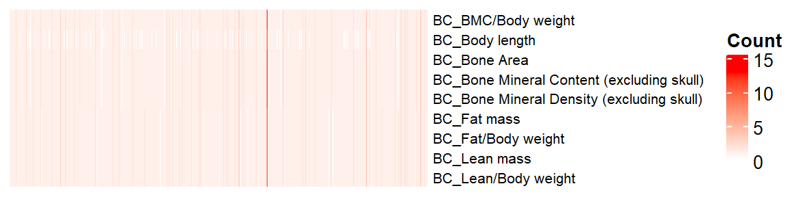
Using Stouffer’s method, merge multiple z-scores of a gene-phenotype pair into a z-score
## sum(z-score)/sqrt(# of zscore)
sumz <- function(z){ sum(z)/sqrt(length(z)) }
ap.z = ap.stat %>%
dplyr::select(marker_symbol, proc_param_name, z_score) %>%
na.omit() %>%
group_by(marker_symbol, proc_param_name) %>%
summarize(zscore = sumz(z_score)) ## combine z-scores`summarise()` has grouped output by 'marker_symbol'. You can override using the `.groups` argument.dim(ap.z)[1] 32174 3Make z-score matrix (long to wide)
nan2na <- function(df){
out <- data.frame(sapply(df, function(x) ifelse(is.nan(x), NA, x)))
colnames(out) <- colnames(df)
out
}
ap.zmat = dcast(ap.z, marker_symbol ~ proc_param_name, value.var = "zscore",
fun.aggregate = mean) %>% tibble::column_to_rownames(var="marker_symbol")
ap.zmat = nan2na(ap.zmat) #convert nan to na
dim(ap.zmat)[1] 4412 9id.mat <- 1*(!is.na(ap.zmat)) # multiply 1 to make this matrix numeric
nrow(as.data.frame(colSums(id.mat)))[1] 9dim(id.mat)[1] 4412 9# heatmap of gene - phenotype (red: tested, white: untested)
if(FALSE){
pdf("~/Google Drive Miami/Miami_IMPC/output/missing_tests_after_filtering_BC.pdf", width = 6, height = 2.7)
ht = Heatmap(t(id.mat),
cluster_rows = T, clustering_distance_rows ="binary",
cluster_columns = T, clustering_distance_columns = "binary",
show_row_dend = F, show_column_dend = F, # do not show dendrogram
show_column_names = F, col = c("white","red"),
row_names_gp = gpar(fontsize = 10), name="Missing")
draw(ht)
dev.off()
}Association Z-score Distribution
We plot a association Z-score distribution for each phenotype.
ggplot(melt(ap.zmat), aes(x=value)) +
geom_histogram() +
facet_wrap(~variable, scales="free", ncol=5)+
theme(strip.text.x = element_text(size = 6))No id variables; using all as measure variables`stat_bin()` using `bins = 30`. Pick better value with `binwidth`.Warning: Removed 7534 rows containing non-finite values (stat_bin).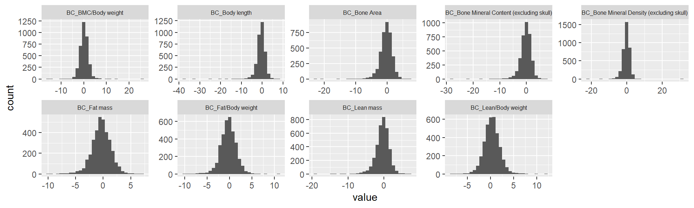
Estimate genetic correlation matrix between phenotypes using Zscores
Here, we estimate the genetic correlations between phenotypes using association Z-score matrix (num of genes:5479, num of phenotypes 14).
ap.zmat <- ap.zmat[,common.pheno.list]
ap.zcor = cor(ap.zmat, use="pairwise.complete.obs", method="spearman")
#col <- colorRampPalette(c("steelblue", "white", "darkorange"))(100)
#pheatmap(op.zcor, cluster_rows = T, cluster_cols=T, show_colnames=F, col=col)
#op.cor.order <- op.cor.out$tree_row[["order"]]
#op.zcor.org <- op.zcor # this will be used in correlation matrix test
#op.zcor <- op.zcor[op.cor.order,]
#op.zcor <- op.zcor[,op.cor.order]
#pheatmap(ap.zcor, cluster_rows = F, cluster_cols=F, show_colnames=F, col=col)
ht = Heatmap(ap.zcor, cluster_rows = T, cluster_columns = T, show_column_names = F, #col = col_fun,
row_names_gp = gpar(fontsize = 10),
#name="Genetic corr (Z-score)"
name="Genetic Corr (Zscore)"
)
draw(ht)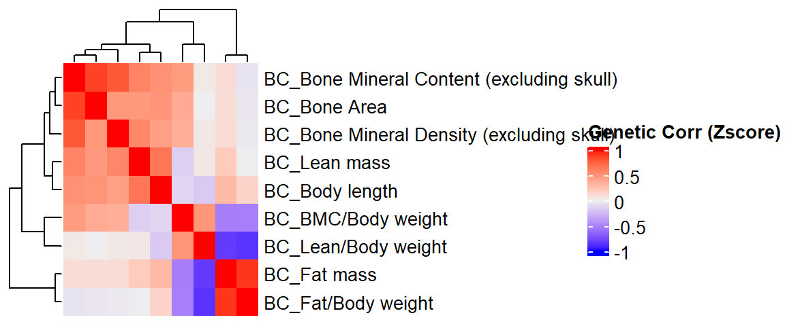
#pheno.order <- row_order(ht)
#ap.zcor <- ap.zcor[pheno.order,pheno.order]phenotype corr VS genetic corr btw phenotypes
We compare a correlation matrix obtained using control mice phenotype data v.s. a genetic correlation matrix estimated using association Z-scores. As you can see, both correlation heatmaps have similar correlation pattern.
ap.cor.rank.fig <- ap.cor.rank[common.pheno.list,common.pheno.list]
ap.cor.fig <- ap.cor[common.pheno.list,common.pheno.list]
ap.cor.combat.fig <- ap.cor.combat[common.pheno.list, common.pheno.list]
ap.zcor.fig <- ap.zcor
ht = Heatmap(ap.cor.rank.fig, cluster_rows = TRUE, cluster_columns = TRUE, show_column_names = F, #col = col_fun,
show_row_dend = F, show_column_dend = F, # do not show dendrogram
row_names_gp = gpar(fontsize = 8), column_title="Phenotype Corr (RankZ, Pearson)", column_title_gp = gpar(fontsize = 8),
name="Corr")
pheno.order <- row_order(ht)Warning: The heatmap has not been initialized. You might have different results
if you repeatedly execute this function, e.g. when row_km/column_km was
set. It is more suggested to do as `ht = draw(ht); row_order(ht)`.draw(ht)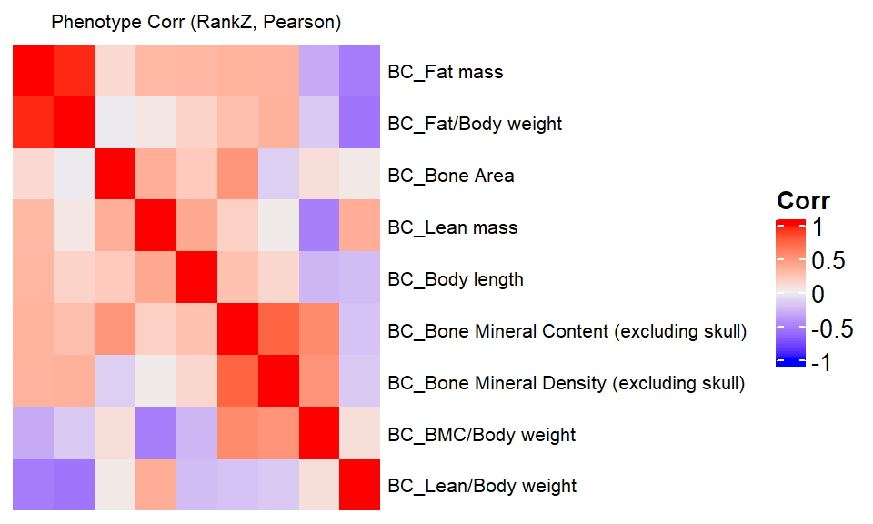
if(FALSE){
pdf("~/Google Drive Miami/Miami_IMPC/output/comp_pheno_corr_gene_corr_combat_BC.pdf", width = 9, height = 2)
ap.cor.rank.fig <- ap.cor.rank.fig[pheno.order,pheno.order]
ht1 = Heatmap(ap.cor.rank.fig, cluster_rows = FALSE, cluster_columns = FALSE, show_column_names = F, #col = col_fun,
show_row_dend = F, show_column_dend = F, # do not show dendrogram
row_names_gp = gpar(fontsize = 8), column_title="Phenotype Corr (RankZ, Pearson)", column_title_gp = gpar(fontsize = 8),
name="Corr")
ap.cor.fig <- ap.cor.fig[pheno.order,pheno.order]
ht2 = Heatmap(ap.cor.fig, cluster_rows = FALSE, cluster_columns = FALSE, show_column_names = F, #col = col_fun,
row_names_gp = gpar(fontsize = 8), column_title="Phenotype Corr (Spearman)", column_title_gp = gpar(fontsize = 8),
name="Corr")
ap.cor.combat.fig <- ap.cor.combat.fig[pheno.order,pheno.order]
ht3 = Heatmap(ap.cor.combat.fig, cluster_rows = FALSE, cluster_columns = FALSE, show_column_names = F, #col = col_fun,
row_names_gp = gpar(fontsize = 8), column_title="Phenotype Corr (Combat, Pearson)", column_title_gp = gpar(fontsize = 8),
name="Corr")
ap.zcor.fig <- ap.zcor.fig[pheno.order,pheno.order]
ht4 = Heatmap(ap.zcor.fig, cluster_rows = FALSE, cluster_columns = FALSE, show_column_names = F, #col = col_fun,
row_names_gp = gpar(fontsize = 8), column_title="Genetic Corr (Pearson)", column_title_gp = gpar(fontsize = 8),
name="Corr"
)
draw(ht1+ht2+ht3+ht4)
dev.off()
}Test of the correlation between genetic correlation matrices
It looks like Jenrich (1970) test is too conservative here. Instead, we use Mantel test testing the correlation between two distance matrices.
####################
# Use Mantel test
# https://stats.idre.ucla.edu/r/faq/how-can-i-perform-a-mantel-test-in-r/
# install.packages("ade4")
library(ade4)
to.upper<-function(X) X[upper.tri(X,diag=FALSE)]
a1 <- to.upper(ap.cor.fig)
a2 <- to.upper(ap.cor.rank.fig)
a3 <- to.upper(ap.cor.combat.fig)
a4 <- to.upper(ap.zcor.fig)
plot(a4, a1)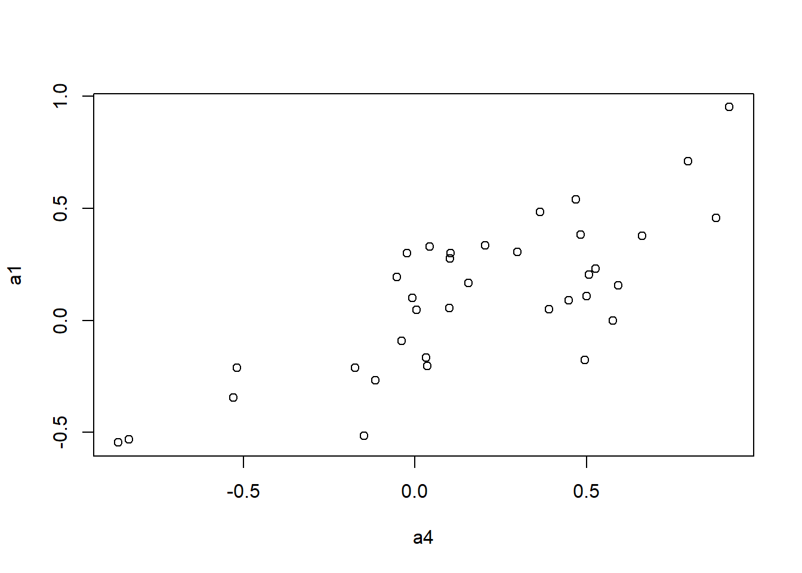
plot(a4, a2)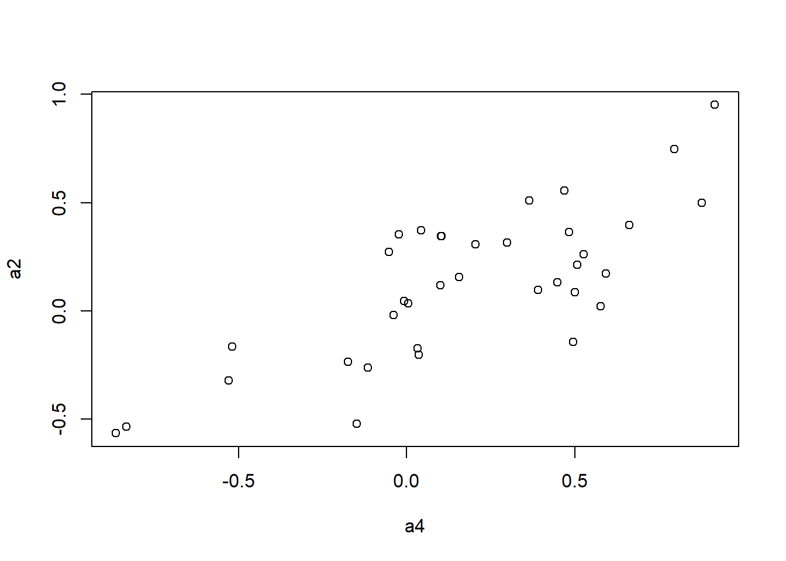
plot(a4, a3)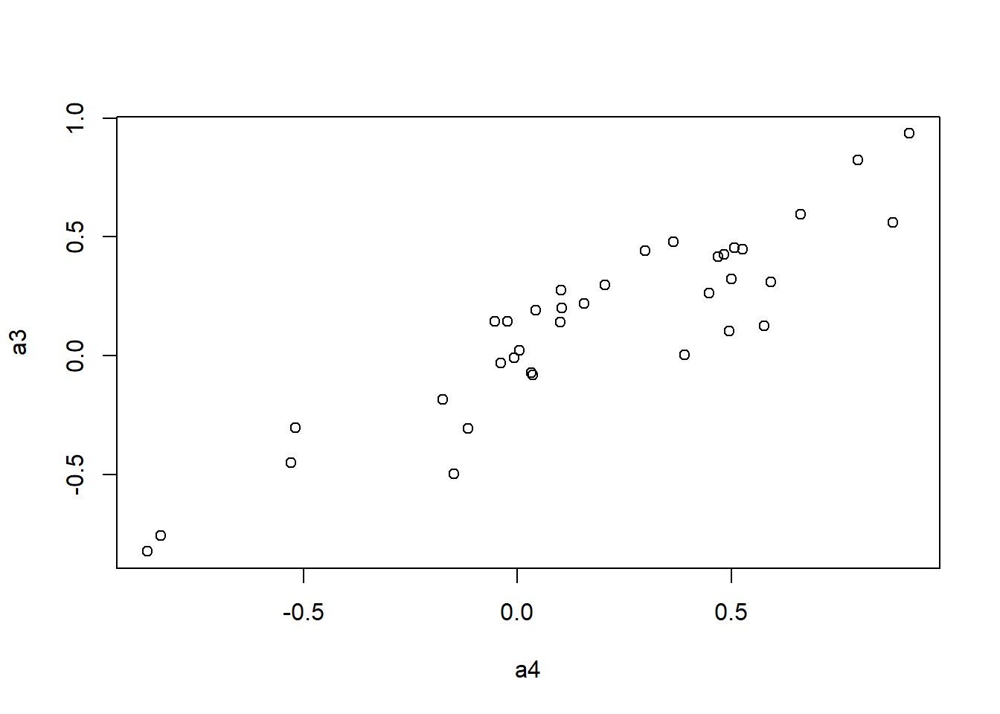
mantel.rtest(as.dist(1-ap.cor.fig), as.dist(1-ap.zcor.fig), nrepet = 9999) #nrepet = number of permutationsMonte-Carlo test
Call: mantelnoneuclid(m1 = m1, m2 = m2, nrepet = nrepet)
Observation: 0.7725431
Based on 9999 replicates
Simulated p-value: 1e-04
Alternative hypothesis: greater
Std.Obs Expectation Variance
4.421228997 -0.001000792 0.030611450 mantel.rtest(as.dist(1-ap.cor.rank.fig), as.dist(1-ap.zcor.fig), nrepet = 9999)Monte-Carlo test
Call: mantelnoneuclid(m1 = m1, m2 = m2, nrepet = nrepet)
Observation: 0.7667761
Based on 9999 replicates
Simulated p-value: 1e-04
Alternative hypothesis: greater
Std.Obs Expectation Variance
4.2448574362 0.0001120909 0.0326199968 mantel.rtest(as.dist(1-ap.cor.combat.fig), as.dist(1-ap.zcor.fig), nrepet = 9999)Monte-Carlo test
Call: mantelnoneuclid(m1 = m1, m2 = m2, nrepet = nrepet)
Observation: 0.9087556
Based on 9999 replicates
Simulated p-value: 1e-04
Alternative hypothesis: greater
Std.Obs Expectation Variance
4.8503970246 0.0005979198 0.0350564523 Test imputation algorithm
KOMPute algorithm
Impute z-scores of untested gene-pheno pair using phenotype correlation matrix
if(FALSE){
library(devtools)
devtools::install_github("dleelab/kompute")
}
library(kompute)Simulation study - imputed vs measured
We randomly select measured gene-phenotype association z-scores, mask those, impute them using kompute algorithm. Then we compare the imputed z-scores to the measured ones.
zmat <-t(ap.zmat)
dim(zmat)[1] 9 4412#filter genes with na < 20
zmat0 <- is.na(zmat)
num.na<-colSums(zmat0)
summary(num.na) Min. 1st Qu. Median Mean 3rd Qu. Max.
0.000 0.000 1.000 1.708 3.000 8.000 zmat <- zmat[,num.na<10]
dim(zmat)[1] 9 4412#pheno.cor <- ap.cor.fig
#pheno.cor <- ap.cor.rank.fig
pheno.cor <- ap.cor.combat.fig
#pheno.cor <- ap.zcor.fig
zmat <- zmat[rownames(pheno.cor),,drop=FALSE]
rownames(zmat)[1] "BC_BMC/Body weight"
[2] "BC_Body length"
[3] "BC_Bone Area"
[4] "BC_Bone Mineral Content (excluding skull)"
[5] "BC_Bone Mineral Density (excluding skull)"
[6] "BC_Fat mass"
[7] "BC_Fat/Body weight"
[8] "BC_Lean mass"
[9] "BC_Lean/Body weight" rownames(pheno.cor)[1] "BC_BMC/Body weight"
[2] "BC_Body length"
[3] "BC_Bone Area"
[4] "BC_Bone Mineral Content (excluding skull)"
[5] "BC_Bone Mineral Density (excluding skull)"
[6] "BC_Fat mass"
[7] "BC_Fat/Body weight"
[8] "BC_Lean mass"
[9] "BC_Lean/Body weight" colnames(pheno.cor)[1] "BC_BMC/Body weight"
[2] "BC_Body length"
[3] "BC_Bone Area"
[4] "BC_Bone Mineral Content (excluding skull)"
[5] "BC_Bone Mineral Density (excluding skull)"
[6] "BC_Fat mass"
[7] "BC_Fat/Body weight"
[8] "BC_Lean mass"
[9] "BC_Lean/Body weight" npheno <- nrow(zmat)
# percentage of missing Z-scores in the original data
100*sum(is.na(zmat))/(nrow(zmat)*ncol(zmat)) # 43%[1] 18.97351nimp <- 2000 # # of missing/imputed Z-scores
set.seed(1111)
# find index of all measured zscores
all.i <- 1:(nrow(zmat)*ncol(zmat))
measured <- as.vector(!is.na(as.matrix(zmat)))
measured.i <- all.i[measured]
# mask 2000 measured z-scores
mask.i <- sort(sample(measured.i, nimp))
org.z = as.matrix(zmat)[mask.i]
zvec <- as.vector(as.matrix(zmat))
zvec[mask.i] <- NA
zmat.imp <- matrix(zvec, nrow=npheno)
rownames(zmat.imp) <- rownames(zmat)Run KOMPute
kompute.res <- kompute(zmat.imp, pheno.cor, 0.01)
KOMPute running...# of genes: 4412# of phenotypes: 9# of imputed Z-scores: 9534# measured vs imputed
length(org.z)[1] 2000imp.z <- as.matrix(kompute.res$zmat)[mask.i]
imp.info <- as.matrix(kompute.res$infomat)[mask.i]
plot(imp.z, org.z)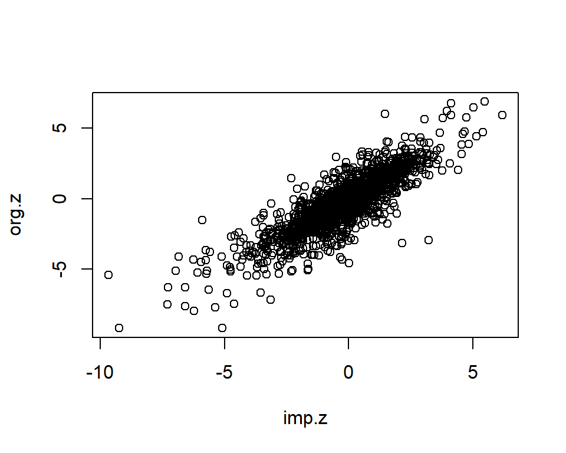
imp <- data.frame(org.z=org.z, imp.z=imp.z, info=imp.info)
dim(imp)[1] 2000 3imp <- imp[complete.cases(imp),]
imp <- subset(imp, info>=0 & info <= 1)
dim(imp)[1] 1995 3cor.val <- round(cor(imp$imp.z, imp$org.z), digits=3)
cor.val[1] 0.856plot(imp$imp.z, imp$org.z)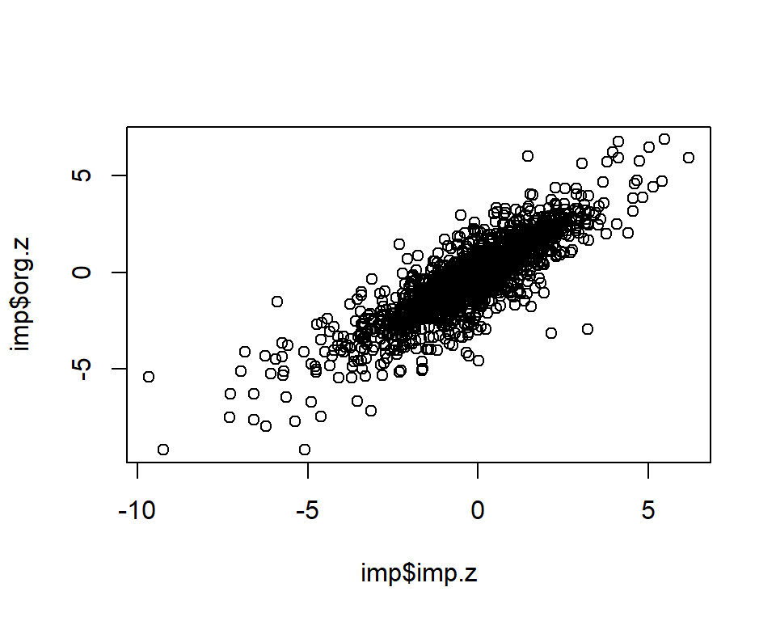
info.cutoff <- 0.9
imp.sub <- subset(imp, info>info.cutoff)
dim(imp.sub)[1] 582 3summary(imp.sub$imp.z) Min. 1st Qu. Median Mean 3rd Qu. Max.
-9.6750 -1.3848 -0.3271 -0.4539 0.6020 6.1920 summary(imp.sub$info) Min. 1st Qu. Median Mean 3rd Qu. Max.
0.9001 0.9327 0.9588 0.9494 0.9691 0.9715 cor.val <- round(cor(imp.sub$imp.z, imp.sub$org.z), digits=3)
cor.val[1] 0.946g <- ggplot(imp.sub, aes(x=imp.z, y=org.z, col=info)) +
geom_point() +
labs(title=paste0("IMPC Behavior Data, Info>", info.cutoff, ", Cor=",cor.val),
x="Imputed Z-scores", y = "Measured Z-scores", col="Info") +
theme_minimal()
g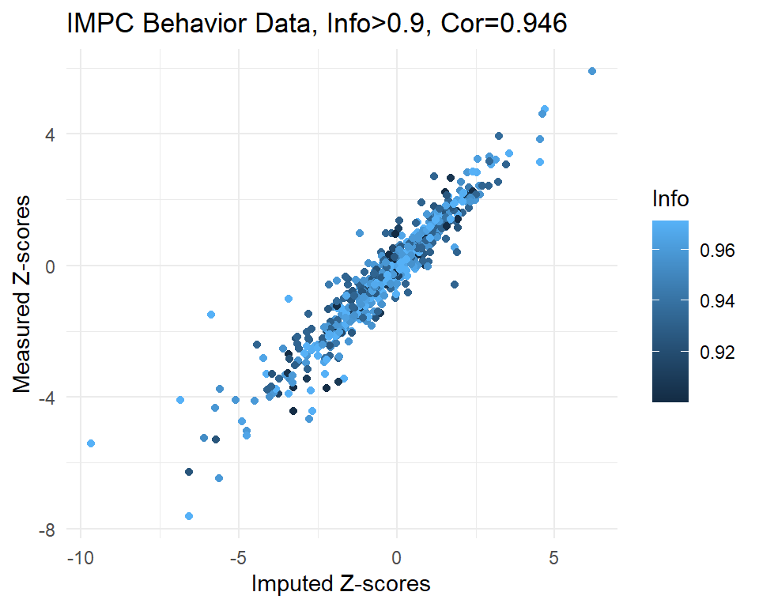
#filename <- "~/Google Drive Miami/Miami_IMPC/output/realdata_measured_vs_imputed_info_BC.pdf"
#ggsave(filename, plot=g, height=4, width=5)
sessionInfo()R version 4.1.1 (2021-08-10)
Platform: x86_64-w64-mingw32/x64 (64-bit)
Running under: Windows 10 x64 (build 19042)
Matrix products: default
locale:
[1] LC_COLLATE=English_United States.1252
[2] LC_CTYPE=English_United States.1252
[3] LC_MONETARY=English_United States.1252
[4] LC_NUMERIC=C
[5] LC_TIME=English_United States.1252
attached base packages:
[1] grid stats graphics grDevices utils datasets methods
[8] base
other attached packages:
[1] kompute_0.1.0 ade4_1.7-18 sva_3.42.0
[4] BiocParallel_1.28.0 genefilter_1.76.0 mgcv_1.8-36
[7] nlme_3.1-152 lme4_1.1-27.1 RNOmni_1.0.0
[10] ComplexHeatmap_2.10.0 circlize_0.4.13 irlba_2.3.3
[13] Matrix_1.3-4 RColorBrewer_1.1-2 tidyr_1.1.4
[16] ggplot2_3.3.5 reshape2_1.4.4 dplyr_1.0.7
[19] data.table_1.14.2 workflowr_1.6.2
loaded via a namespace (and not attached):
[1] bitops_1.0-7 matrixStats_0.61.0 fs_1.5.0
[4] bit64_4.0.5 doParallel_1.0.16 httr_1.4.2
[7] GenomeInfoDb_1.30.0 rprojroot_2.0.2 tools_4.1.1
[10] utf8_1.2.2 R6_2.5.1 DBI_1.1.1
[13] BiocGenerics_0.40.0 colorspace_2.0-2 GetoptLong_1.0.5
[16] withr_2.4.2 tidyselect_1.1.1 bit_4.0.4
[19] compiler_4.1.1 git2r_0.28.0 Biobase_2.54.0
[22] labeling_0.4.2 scales_1.1.1 stringr_1.4.0
[25] digest_0.6.28 minqa_1.2.4 R.utils_2.11.0
[28] rmarkdown_2.11 XVector_0.34.0 pkgconfig_2.0.3
[31] htmltools_0.5.2 limma_3.50.0 fastmap_1.1.0
[34] highr_0.9 rlang_0.4.12 GlobalOptions_0.1.2
[37] RSQLite_2.2.8 shape_1.4.6 jquerylib_0.1.4
[40] farver_2.1.0 generics_0.1.1 R.oo_1.24.0
[43] RCurl_1.98-1.5 magrittr_2.0.1 GenomeInfoDbData_1.2.7
[46] Rcpp_1.0.7 munsell_0.5.0 S4Vectors_0.32.0
[49] fansi_0.5.0 R.methodsS3_1.8.1 lifecycle_1.0.1
[52] edgeR_3.36.0 stringi_1.7.5 whisker_0.4
[55] yaml_2.2.1 zlibbioc_1.40.0 MASS_7.3-54
[58] plyr_1.8.6 blob_1.2.2 parallel_4.1.1
[61] promises_1.2.0.1 crayon_1.4.1 lattice_0.20-44
[64] Biostrings_2.62.0 splines_4.1.1 annotate_1.72.0
[67] KEGGREST_1.34.0 locfit_1.5-9.4 knitr_1.36
[70] pillar_1.6.4 boot_1.3-28 rjson_0.2.20
[73] codetools_0.2-18 stats4_4.1.1 XML_3.99-0.8
[76] glue_1.4.2 evaluate_0.14 png_0.1-7
[79] vctrs_0.3.8 nloptr_1.2.2.2 httpuv_1.6.3
[82] foreach_1.5.1 gtable_0.3.0 purrr_0.3.4
[85] clue_0.3-60 assertthat_0.2.1 cachem_1.0.6
[88] xfun_0.27 xtable_1.8-4 later_1.3.0
[91] survival_3.2-11 tibble_3.1.5 iterators_1.0.13
[94] memoise_2.0.0 AnnotationDbi_1.56.0 IRanges_2.28.0
[97] cluster_2.1.2 ellipsis_0.3.2